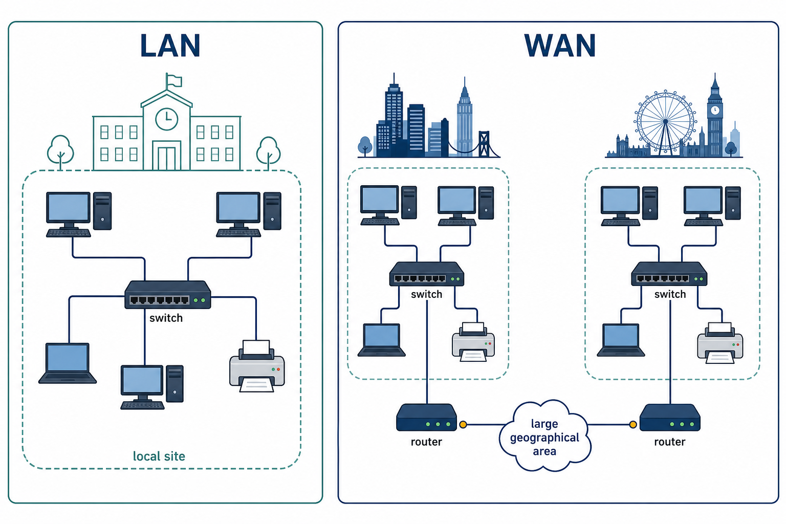

Networking creates shared access; LAN and WAN describe scope
Visual overview
LAN and WAN describe network scope

Visual transcript
- A LAN connects devices within a limited local site under one organisation's control.
- A WAN links LANs over a large geographical area using routers and provider infrastructure.
- LAN and WAN do not by themselves guarantee a particular speed.
Establish the concept
Networking devices connect systems so authorised users can share files, printers, storage, applications and an internet connection. Networks also support communication, collaboration, central account management and central backup.
A benefit needs a cause and a consequence. For example, storing one managed copy of an examination file on a server allows authorised users to access the current version and lets administrators back it up centrally.
A LAN covers a limited geographical area such as one building or site and is normally owned or managed by one organisation. A WAN covers a large geographical area, links separate sites or LANs and commonly uses telecommunications-provider infrastructure. These terms do not guarantee a particular speed.
From a shared resource to a measurable benefit
- Situation: Forty library terminals need the same catalogue and one printer. Separate copies would need separate updates; separate printers would duplicate hardware.
- Networked arrangement: Terminals request the managed catalogue and submit print jobs over the local network. Access permissions determine which users may change records.
- Consequence: A catalogue update is available to authorised clients without copying it to every terminal. Sharing the printer reduces the number of printers needed.
- Boundary: A network does not automatically provide permissions, current backups or uninterrupted service. Those require configuration and maintenance.
Change the scale without changing the definition
The library site is a LAN. A link joining this site to two libraries in other cities forms part of a WAN. The WAN may use provider-owned fibre while each site uses both Ethernet cables and WiFi. Area and control classify scope; the carrier and measured data rate answer different questions.
Core explanation · Exam essentials
- Link each network benefit to a shared resource or a management process and its consequence.
- LAN and WAN describe scope and control; neither guarantees speed or a particular carrier.